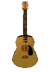

GEEK ROCK RING
members listThe Geek Rock Ring is a webring for fans of the geek rock genre, especially those with an interest in preserving the spirit of the old web. Anyone with their own site and a love for quirky tunes, catchy lyrics and clever eclecticism is welcome to join.
wait, what's geek rock?
Geek rock -- also called nerd rock or dork rock -- is a subgenre of alternative rock characterized by witty lyrics, punchy melodies, and overall priding in a "nerdy" aesthetic. They Might Be Giants, Lemon Demon, Logan Whitehurst, Little Tin Frog and DEVO are just a few musical acts that come to mind, but the list is pretty extensive.
what's a webring?
A webring is a collection of websites that are centered around a certain topic -- this topic can be anything, but most are based around some kind of interest or subculture. Websites in a webring are linked together in the shape of a circle, hence the 'ring' part.
If you're reading this, you're probably already familiar with what webrings are and how they work -- but just in case you aren't, here's a brief history for the pleasure of your eyeholes.
how do i join?
Just add this code to your site and type your site's URL in the box below. This allows me to add it to the member's list.
are there any requirements to join?
- You need to have a site, obviously.
- Your site cannot perpetuate bigotry of any kind.
Other than that, it's pretty much fair game. It helps if you like geek rock, though.